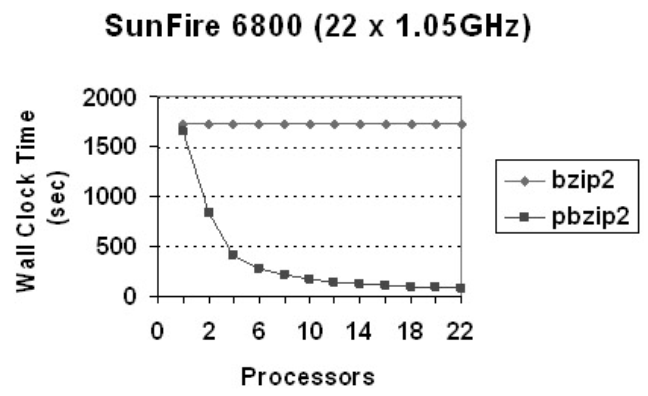
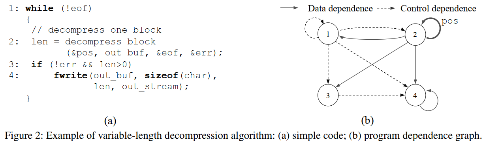
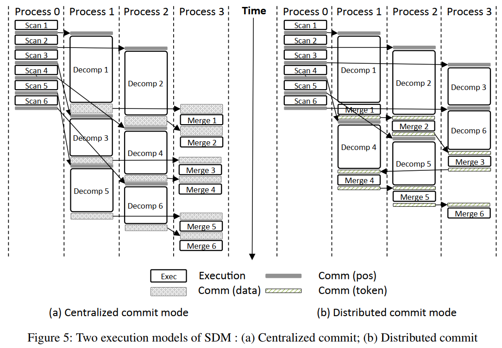
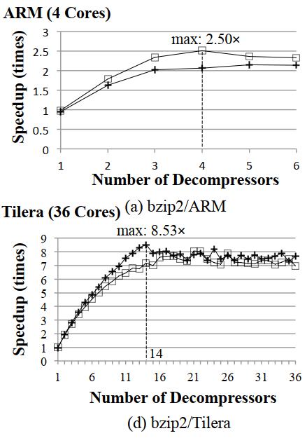
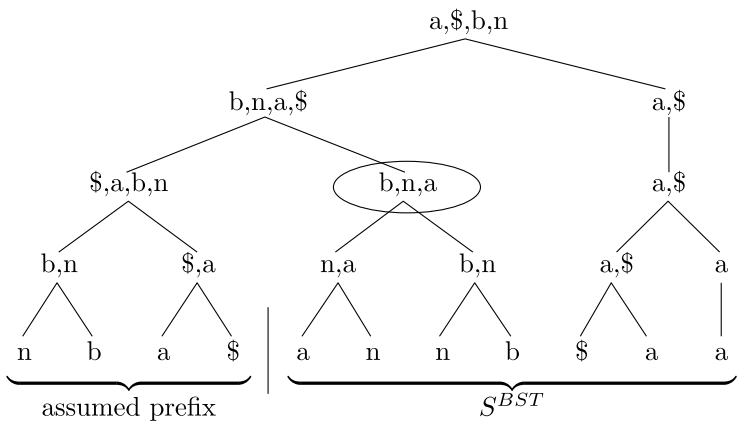
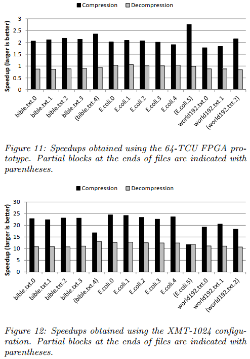

Parallel Data Compression With Bzip2（分块压缩）
压缩算法的分类
- 字典算法
- LZ77（ZIP、GZIP）
- LZW（自适应）
- 并行研究
- 基于统计的算法
- 建模阶段->编码阶段
- 基本建模技术
- 符号频率
- 符号上下文
- 符号排名
- 算术编码器：PPM部分匹配预测
- 当前（2004）文本数据的最佳无损压缩算法
- 有限上下文统计建模技术
- 使用输入流的前一个字节来预测下一个字节
Burrows-Wheeler Transform
概念
- 块排序、无损数据压缩算法，对输入块执行可逆变换
- 不执行任何压缩，但以某种方式修改数据，使其易于使用二级算法进行压缩
- 变换后的块包含与原始块相同的字符，但是形式易于压缩，例如相同字符分组在一起
原理（逆过程见Parallel algorithms for Burrows–Wheeler compression and decompression）
过程
源字符串S，包含N个字符
将S旋转（循环移位）N次，将旋转过程中生成的N个中间串进行字典排序
提取这N个串的最后一个字符，组合成串L
I为源串S在排序后的串列表当中的索引
选择分块大小，至少2KB。增大块大小可以增强有效性
视为三个阶段
- 排序阶段
- “Move-To-Front”阶段
- 压缩阶段
性能
- 内存消耗：9B内存/1B数据+700KB常量
- Move-To-Front编码器的选取影响压缩率：不同的排序顺序和源字母表的顺序
- 最佳性能：O(logn/n)，优于LZ77、LZ78
应用
- BZIP2：BTW+哈夫曼编码
- 压缩率优于基于字典算法的LZ77/LZ78
- 在基于统计算法的PPM中，压缩率接近，但快很多
并行BWT
- 并行排序
- 分块BWT
- 结合上述两种方法
- 性能取决于处理器数量，需要进行测试
并行BZIP2（PBZIP2）
- pthread
- 分块
- 块在内存中以生产者/消费者模型、FIFO管理
- 每个处理器读取块，执行BWT，然后释放内存
实验
- 随着处理器数量的上升，pbzip2压缩时间减小。减小到大概12个处理器就增长缓慢了。

Practical Speculative Parallelization of Variable-Length Decompression Algorithms（分块解压）
解决的问题
如果压缩时采取块级并行，那么解压的时候，在完成对一个块的解压之前，无法确定这个块的边界
相关工作的解决办法：
- 在压缩块的末尾插入填充位，或者加入提示：只适用于修改后的压缩器
- Klein和Wiseman利用Huffman编码的自同步特性：只适用于静态Huffman编码
- 块边界位置在一个输入之内或跨不同输入的相关性几乎为0，因此难以应用domain-unaware value prediction algorithms
提出SDM：一个有效预测区块边界的新算法，和能够实现高效区块级并行解压的运行时系统
- 思考：运行时系统能否被很好应用于移动端？可以，因为华为手表的升级程序是官方定制的。本文的实验是在嵌入式平台上做的
- 不需要修改压缩器
动机
变长解压算法
即使压缩时定长分块，生成的每个块大小也不一样
解压时存在的依赖：

基于值预测的推测并行化
三种方法均无效：
pos变量在一段时间内或者不同的输入之间构成几乎0的相关性，使得值预测无效
在一个块末尾计算pos的复杂性与解压整个块的复杂性相当，使得提取预测器函数开销太大
复杂的依赖模式和有限的程序分析能力使得automatic distiller也无效
目标：三个部件
- 自定义值预测器：以高置信度和低开销确定每个压缩块的起点
- 运行时错误预测检测和恢复机制
- 易于使用的并行化API：将现有的变长解压算法转化为基于值预测的推测并行代码
块边界预测算法
第一种：基于部分解压
- 不适用于bzip2，略
第二种：基于模式匹配
- bzip2包含一个48比特的魔数头，用于标识一个新的被压缩块的开始；并且不存在块间依赖。采用模式匹配
SDM执行模型
SDM三阶段流水线
- 三种进程：扫描器、解压器、合并器
- 主进程创建并配置每个阶段
- 主进程本身作为合并器
- 默认：解压进程数量==可用核心数量
- 在拥有大量可用核心的多核嵌入式平台当中，使用集中式提交模型（一个合并器）
- 解压-合并通信可能成为性能瓶颈
- 由于上下文切换和内存空间开销，核心数较少的平台无法从额外的进程受益，需要使用分布式提交模型
- 将解压器和合并器融合
- 如何顺序提交：定义一个提交令牌在进程间传递。一个块解压后在本地缓存，等待收到解压令牌后才进行提交

错误预测检测和恢复
由合并器负责：将从扫描器收到的预测值与解压器收到的实际值进行对比
如果检测到一个错误预测，所有的扫描器和解压器都被停止，程序的其余部分顺序执行
SDM API
- 略
实验

- 错误恢复的性能：对于bzip2，如果误判发生在输入文件的开头附近会造成轻微的性能下降；但是在大多数情况下都比顺序执行要快
Parallel algorithms for Burrows–Wheeler compression and decompression（块内压缩和解压）
贡献
- 第一个应用于BW压缩和解压缩问题的PRAM算法
- 相比Parallel Data Compression With Bzip2，解决了整个输入的BWT问题，而不是分块
- 本方法与分块方法正交，因此还可以在单个块上叠加应用本方法
预备知识
BST
正过程
- 见Parallel Data Compression With Bzip2
逆过程（IBST）
定义SBST为BST正过程生成的串，M为BST正过程排序后的矩阵（显然M为方阵）。显然SBST为M的最后一列
需要一个符号表示字符串末尾，且这个符号的字典序最小。对于英文字符串，可以取ASCII序在英文字母之前的”$“。在Parallel Data Compression With Bzip2这篇论文当中则是用一个数组记录
迭代法生成M的每一列，迭代N次后，取M的第一行即为原来的S
为了生成M的第一列，将*SBST*进行稳定排序。
为了生成M的前两列，执行下列两个步骤：
将*SBST*插入到第一列的左边
对M的前两列进行下列定义的排序：
- 如果两行的第一个字符不同，则根据第一个字符排序
- 如果两行的第一个字符相同，不动
重复2直到生成M
O(N)复杂度方法
- 图示思路：将M中的所有*$写出来；然后旋转每一行，使得$位于最后一列；此时，从左往右读就是源串S*
- 伪代码：有点难读懂，先略过
MTF
正过程
给定一个字符，MTF将每个字符替换为：该字符本次出现与上次出现之间，不同字符的个数。为了保证该定义有效，规定字母表在*SBST*之前以某种顺序出现。
定义*Li为SBST*的前i个字符中，每一个不同字符以其最后一次出现的位置倒序生成的列表，且考虑上述假定的前缀。
伪代码：
L := L0（即假定前缀的倒序）
for i := 0 to n - 1 do
j := SBST[i]在L中的索引
SMTF[i] := j
将L[j]移动到L首部
目的：由于BST保证了同个字符的出现位置相近，MTF生成的是小整数序列，即小整数出现频率很高。因此该序列适合于进行Huffman编码。
逆过程
- 伪代码：
- L := L0
- for i := 0 to n - 1 do
- j := SMTF[i]
- SBST := L[j]
- 将L[j]移动到L首部
Huffman编码
正过程
- 伪代码：
- 把字母表中的每个字符在SMTF中出现的次数进行统计，生成频率表F
- 使用频率表F构造码表T。对于任意两个字符a、b，如果F(a) < F(b)，则|T(a)|>=|T(b)|
- 将SMTF中的每个字符用T中对应的码字代替，生成SBW。SBW即为整个压缩算法的输出
- 思考：
- 源串中一个字符需要一个字节来存储；Huffman编码后字符由几个0、1比特表示，只需要几个位来存储。如果Huffman的平均字长小于8，则源文件体积能够减小。
逆过程
- 显而易见。参考解压的并行一章
压缩的并行
BST
构建后缀树
性能：
Sahinalp and Vishkin的算法：O(log2n)时间，O(n)工作，O(n2)空间
可以将空间复杂度降到O(n1+ε)，当时间增加1/ε倍
Hariharan的算法：O(log4n)时间，O(n)工作，O(n)空间
DFS遍历后缀树，生成后缀数组SA
- 欧拉旅行技术
- 相同复杂度界限
按照如下公式生成*SBST*：SBST[i]=S[(SA[i]-1)mod n], 0<=i<n
- 性能：O(1)时间，O(n)工作
MTF编码
定义
- MTF(X)：同Li，只不过Li针对的是输入串的前缀，MTF(X)进行了扩展，针对任意子串X
- x⊕y： 把在y中出现过的字符从x中移除生成一个列表，然后把这个列表拼接到y的后面
- 注解：y不动，x中单独出现的部分拼在y后面
观察
- MTF(c)=(c)
- MTF(XY)=MTF(X)⊕MTF(y)
目标：计算所有Li，即计算SBST（考虑假定前缀）所有前缀的MTF
步骤：
将*SBST*的每个元素看成初始的列表，从下往上，在一棵平衡二叉树中用⊕运算符两两合并列表，直到根节点

从上到下，计算每个节点的⊕运算前缀和（从根的最左叶子节点到当前子树的最右叶子节点）。叶子节点的前缀和即为Li
性能：
- 时间复杂度：O(|Σ|logn)时间，O(|Σ|n)工作
- 空间复杂度：n|Σ|
- 权衡空间和时间的方法（划分粒度）：选取一个k<n，只排序*L0、Lk、L2k*、……。此时空间降低k倍，时间相应增加k倍
Huffman编码
看了，但暂时不关心，没记录
解压的并行
Huffman解码
- 难点：由于Huffman码字是变长的，需要选定*SBW*的分割位置
- 定义l为最长码字的长度。不失一般性，假定|SBW|能够被l整除，我们要把SBW分割为若干个长度为l的切分。目标是选定每个切分的开始位置
- 计算开始位置需要两个步骤：初始化->前缀和计算
- 初始化阶段
- 从SBW中的每个位SBWi开始执行解码（解码一个码字）。对于每个i，获得一个停止解码的位置j。记为i->j
- 前缀和计算阶段
- 对于形如a->b、b->c的映射，将他们合并为a->c
- 合并后，0指向的所有位置都是开始位置，保存到集合V中
- 初始化阶段
- 实际解码阶段如下：
- 部署n/l个处理器，每个处理器指定集合V中一个不同的开始位置，并行执行哈夫曼解码，直到到达下一个开始位置。解码后先不写到内存。O(l)时间，O(n)工作
- 使用前缀和为每个处理器在SMTF的输出分配空间。O(log n)时间，O(n)工作**
- 重复步骤1，将输出写到*SMTF*。O(l)时间，O(n)工作
- 实际解码阶段：O(logn+l)时间，O(n)工作
- 思考：这么细的划分粒度值得吗？partition的块数太多了，是否可以不要分那么多
MTF解码
- 与编码类型
- 性能相同：O(|Σ|logn)时间，O(|Σ|n)工作
IBST
涉及Cole and Vishkin的整数排序算法
- 性能：O(|Σ|logn)时间，O(|Σ|n)工作
性能：O(|Σ|logn)时间，O(|Σ|n)工作
实验
- 这篇文章没有做实验
- 实验在另一篇文章Empirical Speedup Study of Truly Parallel Data Compression
Empirical Speedup Study of Truly Parallel Data Compression（块内压缩和解压）
实验
在XML计算平台的64-TCU FPGA上运行时，解压性能总体上看甚至略微下降了；在模拟的1024-TCU上运行时有提升

思考：这个是在专用的并行计算平台上运行的结果，对移动端的参考价值？
Parallelizing Bzip2: A Case Study in Multicore Software Engineering（学生作品）
简介
- 一个多核软件工程课程的最后三周，8名计算机科学专业的研究生2人一组进行比赛，对bzip2算法进行并行化
- 针对压缩
Team 1
- 发现细粒度的并行化不合适，需要大量努力重构代码
- 尝试用类重构，但最后ddl到了还是换回没有类的版本，整合了Bzip2SMP的一些并行化思想
Team 2（winner）
- 重构花了很长时间，最后一天才写并行
- 生产者-消费者模式+pthreads
- 流水线没时间写了
Team 3
- master-worker方法
- master程序向一个缓冲区填充块，worker程序从缓冲区中取出块来进行压缩
- 线程同步和文件顺序输出遇到困难
- 超时了
Team 4
- 用openmp，性能较差
- 大部分时间花在理解代码
Lessons Learned
并行化之前需要重构代码
增量并行化没有作用
- 例如用OpenMP在代码开头加pragma
研究关键路径行不通
- 例如用profile工具
- 顺序实现通常涉及设计选择，排除了并行化可能需要的自由度
- 因此，仅仅研究顺序实现是不够的，还需要研究规范
细粒度并行不是唯一选择
- 例如，关键路径上循环的并行化只产生很小的速度提升
寻找高层次并行化
- 例如，引入生产者-消费者模式或者master-worker模式
- 代码实现涉及的细节更多
试错是有风险的
并行化不是黑色艺术
Advice
并行时考虑多个层次
- 不然就会“一分钱一分货”
如果从0开始写顺序代码，要为并行化考虑
多练习
相关前置知识
- 自适应（动态）哈夫曼编码与解码过程_菜鸟的逆袭之路的博客-CSDN博客_动态哈夫曼编码
- Parallel algorithms for Burrows–Wheeler compression and decompression中使用的Huffman编码是动态的，因为没有提到要存Huffman树
- 并行算法科普向 系列之二：前缀和，fork-join 和矩阵乘法 - 知乎 (zhihu.com)
- 值预测算法：见文章Value Prediction for Speculative Multithreaded Architectures
- Practical Speculative Parallelization of Variable-Length Decompression Algorithms中提到值预测算法不可用
- 值预测技术基于以下推测：在大量的时间内，值倾向于重复，或者遵循一个已知的模式。因此，如果使用恰当的机制，值可能能够被正确地预测。这些机制的基础是存储反映近期观察到的历史信息的表格
- 分类
- 基于指令的值预测器
- 基于追踪的值预测器
相关实现
bwtzip
- bwtzip - nuwen.net
- 他是高度模块化的，或许可以帮助我后续的代码重构和实现
相关会议
- Data Compression Conference：IEEE Xplore - Conference Table of Contents